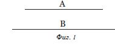
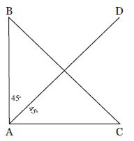

Беседа 1225 от 3877 · Беинса Дуно
Къси и дълги линии
„Верен, истинен , чист и благ всякога бъди и Господ на мира ще изпълни сърцето ти с всички добрини!"
Размишление.
Четоха се резюмета на темите: „Най-голямата скръб" и „Цярът на най-голямата скръб".
Представете си един човек с широко чело, което показва голямо въображение. Като се спрете върху очите на този човек, мислете за съзнанието. Очите показват будността на съзнанието. Носът представя корените на съзнанието, а устата – източни-кът, отдето съзнанието черпи сила. Ушите са вентилатори на съзнанието. Съзнанието на човека се проветрява през ушите.


В духовния свят телата се движат с голяма бързина, вследствие на което, ако влезете в този свят, вие ще се намерите в голямо затруднение. Там не съществуват почти никакви посоки. Вие не знаете къде е изток, къде е запад, къде е север или юг. Щом влезете в духовния свят, първото нещо, което ще видите, е една светла топка, която се движи с вихрена бързина. От тази светла топка ще се поляризират две точки, две направления – нагоре и надолу. Щом видите тази светла топка, ще имате търпение да дочакате края, да видите какво ще стане с нея. Тази топка ще отива все по-нагоре и нагоре, ще се оформи в светъл образ, който ще ви се усмихне. Като види, че сте наскърбени, той ще ви каже: „Не се безпокойте, Бог е с вас. Той ще ви помогне и работата ви ще се нареди.” Тази топка е различно голяма, най-много може да стигне големината на слънцето. Като видите тази светлина, вие ще се успокоите и ще се убедите в съществуването на великата разумност в света, която се грижи за всички същества.
Мнозина искат да им се докаже това нещо. За да се докаже това, те трябва да бъдат поставени между двата полюса на живота – скръбта и радостта. Първо Бог поставя човека в ретортата на скръбта, т. е. в огъня на скръбта, дето ще се разтопи като руда. Сгурията не се отделя, докато напълно не излезе от метала. Значи колкото и да вика човек, няма да го извадят от ретортата, докато сгурията не излезе вън от него. Като излезе от тази реторта, ще го прекарат през втора, трета,четвърта, докато съвършено се освободи от сгурията, от примесите на живота и мине в другия полюс – в радостта. Преди да е влязъл в ретортата, човек мисли, че е изоставен от Бога, че никой не го обича, че няма ум, сърце, душа в себе си, че краката му не го държат и т. н. Щом излезе от ретортата, той се усеща силен, подмладен, готов за работа. Разумната скръб прави човека здрав. Тя води към радостта. Когато скърби, човек търси пътя към истината. Щом започне да търси истината, той вече не се обезсърчава.
И тъй, който иска да стане силен, той непременно трябва да скърби. В скръбта човек уяква, засилва се. Който не иска да страда, той неизбежно е осъден да стане инвалид, да изгуби силите си. Човек трябва да скърби, но в скръбта си да бъде като малките деца, които лесно трансформират състоянията си. Христос казва: „Станете като децата.” С това Той иска да покаже на хората, как да страдат и как да се радват. Чиста е радостта на малките деца. Мимолетна е скръбта на децата. Докато видите, че някое дете плаче и тъжи, изведнъж го виждате весело, засмяно, изтрива очите си, усмихва се и всичко забравя. Някой се оплаква, че имал голяма скръб. Какво лошо има в това? Когато той скърби, друг някой се радва. Когато друг скърби, той пък ще се радва. Ако пресеете скърбите на съвременния човек, ще видите, че на хиляда скърби едва една от тях заслужава внимание. Останалите 999 скърби са фиктивни. Слушате една майка да се оплаква, че детето й било злоядо, не обичало да яде много, не обичало да яде каква и да е храна. Майката скърби, че детето й не яде всичко. Скръб ли е това ? Тя трябва да се радва даже, че детето й не е всеядно, а прави избор на храните. Какво по-хубаво от това? Друг пък се оплаква, че цели 24 часа нищо не е ял, щял да умре от глад. Чудно нещо! Лека-рите препоръчват, на някои болни по три– четири деня абсолютен глад, а той щял да умре, защото не ял само 24 часа. С ядене само не се живее. Многото ядене изтощава човешкия организъм. Колкото по-малко човек яде, толкова повече животът му се продължава.
Съвременните хора вървят по пътя на крайния материализъм. Те мислят, че животът седи в яденето и в пиенето. – Не, животът не седи в яденето, но в живата храна. Хората се ползват от храната дотолкова, доколкото съзнават, че Бог е в нея. Ако при храненето си те не внасят мисълта, че Бог е в храната, тази храна е гниеща и носи болести и смърт за тях. Христос е казал:„Който не яде плътта ми и не пие кръвта ми, няма живот в себе си." Значи ние трябва да ядем плътта Христова и да пием кръвта Му. Всичко се крие в тази храна. Затова трябва винаги да благодарим за нея. Обаче благото на живота не е само в яденето, нито опасността е в яденето. Човек трябва съзнателно да се храни, да знае каква храна да употребява и как да се храни. Днес се повдига въпросът, месна или вегетарианска храна да се употребява. За предпочитане е вегетарианската храна. Защо? Едно от научните обяснения, с което се поддържа вегетарианството, е обстоятелството, че съзнанието на животните, които се колят, е доста развито. Те искат да живеят, не се поддават доброволно на колене. Въпреки това върху тях се упражнява насилие. Насилието внася в организъма на тия животни различни отрови, които минават и в човешкия организъм.Животните предчувстват, че ще ги колят и започват да се смущават. Това смущение, този страх, тази омраза са причина за отровите, които се образуват в организма им. Човек трябва да наблюдава животните, които са определени за колене, за да види, че те предчувстват това няколко деня преди да бъдат заклани. Наблюдавайте кокошките в курниците, да видите какво смущение настава между тях, когато почувстват, че някоя от тях е определена на смърт. Страшни отрови се развиват в организма им! Един ден химиците ще изследват тези отрови и ще се убедят в истинността на тия твърдения.
Много култури и цивилизации са изчезнали, благодарение на отровите, които се съ-държат в месната храна. Атланската раса например е изчезнала по причина на отровите в месото на животните. Съвременната култура е осъдена да загине по същата причина. Сегашните хора употребяват много месо. Зъбите на американците са развалени, от употребата на много месо. Не само зъбите им ще опадат, но и главите им ще оголеят от много ядене на месо. Падане на зъбите, оголяване на главите, хлътване на гърдите води към израждане на човека. Това израждане се дължи на отровите в месото, с което хората се хранят. Като знае това нещо, човек трябва да стане вегетарианец по идея, съзнателно, а не по подражание. Някой става вегетарианец без някаква идея в себе си и като му замирише на кокошчица или на свинско, пожелава да си хапне малко, но срам го е от окръжаващите, които знаят, че не яде месо. Той съжалява в себе си, че е станал вегетарианец. Някой вегетарианец си купил една–две скумрии, опекъл ги, полял ги с лимон и започва да яде, но се озърта да не го види някой. Защо се страхува да не го видят? За хората ли е станал вегетарианец? Когато се определя в себе си да стане вегетарианец, или не, човек трябва да запита Бога какво Той ще го посъветва. Ако му се каже, че не трябва да яде месо, поради отровите, които месната храна съдържа, той трябва да слуша, да изпълни този съвет. Ако не слуша съвета на Господа, никой не може да му помогне срещу тия отрови. Голям бич са те за съвременното човечество! Причината за болестите на хората се дължат именно на тия отрови. За да се изчисти кръвта на човека по естествен път, изискват се най-малко десет поколения чист живот. Има методи за бързо пречистване на кръвта, но те се дават на малцина, само на ония, които са готови да посветят живота си за служене на Бога. С прилагането на тези методи в десет години човек може да пречисти кръвта си и да се подмлади. Наука е това.
Често в Школата се изнасят общи принципи и положения, които изглеждат съвсем противоречиви за съвременната наука. Това не значи, че ние отричаме основите на науката. Ние отричаме човешкото, преходното в науката, обаче поддържаме Божествената наука, която е една и съща за всички векове. Въпреки това тя вечно прогресира.
Сега, като ученици вие трябва да изучавате Божествената наука във всички нейни отрасли: музика, изкуство, художество, както и отделните области на науката. Като дойдете до музиката, вие трябва да различавате творци музиканти от изпълнители. За тази цел изучавайте челата на великите музиканти. Колкото по-широко е челото на музиканта, толкова по-силно развити са. творческите му способности. Ако челото е тясно, музикантът може да бъде добър изпълнител, но не и творец. Днес се говори за класическа и модерна музика. Класическа музика е тази, която е в сила да измени състоянието на човека, да превърне скръбта му в радост. Когато сте скръбни, помолете някой музикант да ви изсвири нещо от Моцарт, от Бетховен или от Бах. Ако това парче може да смени състоянието ви, тази музика е наистина класическа. Класическата музика трябва да оказва възпитателно влияние върху човека. Ако тя не окаже възпитателно въздействие върху човека или не може да лекува, тогава или музикантът не е изпълнил добре парчето, или музиката не е класическа. Бах е писал своите произведения с вдъхновение. Следователно който свири неговите произведения, и той трябва да има същото вдъхновение.
И тъй, Божествената наука, за която говорим, включва в себе си съвършената музика. Тази музика се отличава по това, че е проникната от любовни чувства и светли, възвишени мисли. В нея чувствата и мислите са хармонично съчетани. За да се изрази тази музика, човек трябва да има добре развито въображение. Въображението е майка на идеите. В него като в утроба се раждат всички хубави неща. Без въображение човек не може да зачене нищо хубаво. За да развива въображението си, човек трябва да си представя най-хубавите неща, макар и непостижими. Съвременните хора се стремят към грубо реалното в света, към онова, което може да се възприеме с петте сетива, но те трябва да знаят, че тия неща именно не развиват въображението. Музикантът, поетът, писателят непременно трябва да имат добре развито въображение. Те не трябва да бъдат богати. Ако дадете един-два милиона на няколко музиканти или поети, те ще престанат да работят. В скоро време ще ги видите инвалиди. По цели дни ще се разхождат с автомобили. Истинските музиканти, поети, писатели, учени са живели при най-големи лишения и мъчнотии. Така те са расли и развивали своите дарби.
Сега, каквото и да правят учените, обществениците, държавниците, трябва да знаят, че няма да обърнат, т. е. да изправят света. Те могат да въздейетват на отделни личности, но не и на света. Светът слиза в гъстата материя. Той върви по свой определен път. Обаче който не служи на личността си, той може да се повдигне, да излезе от гъстата материя и да вземе посока към Бога, противоположна на тази, по която светът върви. Значи две са главните посоки на движение: едната е надолу, в гъстата материя, а втората – нагоре, в духовния свят. Първата посока е тази, към която светът се стреми; втората посока е тази, към която ние се стремим. Тези две посоки са съединени помежду си. Каквото светът спечели, то е заради нас. Каквото хората правят, то е пак заради нас. Кой каквото спечели, ще го остави на земята, не може да го вземе със себе си. То ще остане за онези, които придобият земята в наследство. Каквото спечелят музикантите, поетите, художниците, то ще остане на света. Но това не значи, че те принадлежат на света, нито са от категорията на света. Светът нищо не е създал. Светът е банка, в която са вложени Божествените капитали. Когато казвате, че трябва да влезете в света, подразбирам Божествения свят, а не онзи, който върви надолу, в гъстата материя. Ако влезете в този свят, вие ще мязате на пауни, ще стъпвате гордо, с разперени крила, но ще излезете оскубани, без пера. Ще влезете с всичкото си величие, а ще излезете обрани, оскубани, за посмешище на хората. Волът ще влезе в света с рогата си, а ще излезе без рога и с одрана кожа. Овцата пък ще влезе с вълната си, а ще излезе оскубана и одрана.
Хората в света се делят на две категории: тия от първата категория се движат в посока на същественото и казват, че материята трябва да се сгъсти. Прави са тия хора, защото те слизат. Хората от втората категория казват, че материята трябва да се разреди. И те са прави, защото възлизат нагоре, дето материята става все по-рядка. Ние се движим по равнодействащата на тия две линии, които имат обща точка. Значи ние се движим нито надолу, нито нагоре. Кога двама души имат една обща допирна точка? – Когато имат общ интерес. Този интерес може да бъде от различен характер. Ще видите, че след време тези двама души се сродяват. На единия се ражда момче, на другия – момиче. Като пораснат децата им, те ги оженват и по този начин правят връзка помежду си.
Животът на хората не е нищо друго, освен непрекъсната верига от връзки. Съвременната култура се занимава изключително с правене на връзки. Поетите пишат само за мъже и за жени, за млади момци и моми. Рядко ще срещнете поет да пише за Бога, за нещо велико. Поети, музиканти, художници повече възпяват или рисуват младостта. Защо? – Защото младостта е носителка на Божествения живот. Докато е млад, човек е – носител на Божественото в себе си. Щом остарее, Божественото го напуща. Младостта представя Божествения живот; старостта – човешкия живот. Когато младият се гневи, сърди, той е стар. Когато старият престане да се сърди, той е млад. Следователно който иска да се подмлади, той трябва да стане господар на гнева си. Не се гневете на никого. Когато гневът дойде у вас, говорете с него, но не се гневете. Помнете всякога, че Бог живее във вас и вие в Него. Ако Той търпи всички хора, всички противоречия, радвайте се за това и не се сърдете на хората. Какво правите вие? Погледнете на този, на онзи и казвате, че са големи грешници. В бъдеще тези грешници ще станат големи светии, а в по-далечното бъдеще ще станат ангели. Обаче време се изисква за това. Във всеки човек има скрити възможности за неговото повдигане и падане. Грешникът може да стане светия и светията може да стане грешник. Бог е създал света, Той е господар на положението. Той въздига царе и сваля царе, въздига души и сваля души. Като не разбирате това, вие гледате на света от две страни и ту го осъждате, ту го одобрявате.
Когато виждате злото, казвате, че Бог не е създал света, както трябва. Тогава съдите Бога. Когато виждате доброто, казвате, че светът е създаден идеално. Който не разбира Божията мъдрост, без да иска, създава злото. Той намира, че в света съществува несправедливост, че едни са учени, а други – прости. Докато човек не дойде до положение правилно да разбира отношенията между най-малките същества и човека, той никога няма да разбере Божиите закони. И в най-малката мушица има възможности да порасне, да стане голямо същество, но за това се изисква време. Ако на мухата се дадат условия, каквито са дадени на човека, и тя може да стане като него. За Якова се казва в Писанието, че Бог се обърнал към него с думите: „Не бой се, червей Якове!” Това значи: Ако Бог се е грижил за Якова, когато е бил червей, колко повече сега, като човек, надарен с дарби и способности. Като знаете това, постъпвайте справедливо към всички същества. Видите ли червей, не го тъпчете. Знайте, че някога и вие сте били като него. Благодарете на Бога, че сте се повдигнали до положението на човек и помолете се Той да благослови този червей, по-скоро да излезе от своето положение. Задачата на човека е да помага на по-малките от себе си, а не да ги осъжда.
Сега всички трябва да работите върху себе си, да очистите ума и сърцето си от всичко отрицателно. Не чакайте наготово да получите знания. Никой нищо няма да ви даде наготово. Само на детето се помага, само на детето се дава наготово. Кой как срещне детето, ще го вземе на ръце, ще го помилва, ще го целуне. Стария обаче никога не вземат на ръце. Той сам трябва да ходи. Казва се в Писанието, че Бог носил Израиля на ръце през пустинята. Това е преносен израз. Бог имал грижата за Израилския народ, но не го е носил на ръце. Такава грижа има Той за всички живи същества, малки и големи.
Като ученици вие трябва да работите за развиване на своето въображение, за пробуждане на съзнанието си. Будно съзнание се иска от всички. Очите ви трябва да бъдат отворени не за злото, за отрицателното в света, но за доброто, за положителното. Че виждате злото, това не трябва да ви спира в пътя. Щом съществува злото, има причини за това. Какви са причините, не е ваша работа да ги търсите. Злото като сила има своето право и във вселената. Който разбира злото, той може да го използва за добро. Който не го разбира, той не трябва да му слугува, нито да му се подчинява. Казано е в Писанието: „Побеждавайте злото с добро!" Следователно не мислете за злото, за да не се вкисвате. Мислете за доброто, за красивото и хубавото в света, за да развивате своите дарби. Това не се постига лесно. Много време ще плачете, ще проливате сълзи, докато придобиете микроскопическо знание. Не е лошо да плаче човек. Какво показва плачът? Плачът показва, че изворите на човека текат. По-добре е изворите да текат, отколкото да са пресъхнали. Кои хора плачат? – Живите. Мъртвите никога не плачат. По-добре е детето да плаче, но да е живо, отколкото да не плаче и да е мъртво. По-добре е човек да скърби, но да е жив, отколкото да не скърби и да е мъртъв. Колкото по-голяма е скръбта на човека, толкова по-голяма е и радостта му. Когато скърби, човек мисли за всички, които скърбят, страдат едновременно с него, и по този начин им помага. Това и Христос правеше. Затова се казва, че Христос понесе страданията на хората.
Каквото и да правите, знайте, че това, което човек желае, ще го постигне. – Кога ? – Това не е важно. Днес или утре, той ще постигне това, което желае. Има едно Божествено „днес или утре", но то не е определено. Каквото желаете, сложете го в Божествения ден, там да се реализира. Ако хиляди години сте били при Бога и Той ви е угощавал, без да ви иска нещо, не трябва ли сега да работите ? Той ви е пратил на земята да работите. Скръбта, страданията, които преживявате, са работа. Всеки от вас е прекарал няколко хиляди години при Господа, но щом сте дошли на земята, вие трябва да работите. Така е и в живота. Като ви дойде гост, три дни може да яде и да пие, да гостува, без да работи. На четвъртия ден вече той трябва да работи. Мнозина обикаляте това правило. Те ходят на гости от един дом в друг, навсякъде прекарват по три дена и не дочакват четвъртия ден. Каквото и да правите, трябва да знаете, че от всички се иска съзнателна работа. Всеки ще бъде поставен на ред изпитания, да се научи да преодолява. Започне някой да се моли. В това време ще му дойде на ума, че не е свършил някаква бърза, важна работа и ще прекъсне молитвата. После пак започне да се моли, но друго нещо ще го отклони. Така той ще отлага молитвата си, ще се чувства недоволен от себе си, докато най-после привикне да се съсредоточава. В това отношение турците се молят продължително. Преди да започне молитвата си, турчинът се мие, облича, нарежда и като бъде съвсем готов, пристъпва към молитва. Ако в това време някоя лоша мисъл мине през ума му, той прекъсва молитвата и започва отново да се мие. Щом се измие, изчисти, пак започва да се моли. Докато не направи молитвата си без грешка, той все я прекъсва и отново започва. Някой се моли и току поглежда часовника си, да не закъснее. Този човек е влязъл в областта на изкушенията.
И тъй, когато се молите, забравете всичко във вас и около вас. Забравете часовника си, забравете работите, които ви чакат през деня, забравете и себе си най-после. Затворете очите си, вглъбете се в себе си и започнете да се молите. Само така ще дойдат Божиите благословения върху вас. Щом отворите очите си, започнете работата си. Като се помолите по този начин, вие ще получите вътрешно вдъхновение. Каквато работа започнете при това вдъхновение, всичко ще върви добре. Щом имате вдъхновение, не отлагайте работите си за друг ден. И на път да сте, като ви дойде вдъхновение да направите нещо, не отлагайте. Вдъхновението струва повече от всичко друго. Използувайте го още на момента. Не мислете върху това, какво ще кажат хората за вас. За вдъхновения човек хората нищо лошо не могат да кажат. Той е умен, добър човек.
Сега, желая на всички да бъдете умни, добри, да бъдете образци в прав смисъл на думата. Не мислете, че ако сте умни и добри, няма да дойдат изпитания за вас. Изпитания неизбежно ще дойдат за всички. Скърбите следват радостите. Който не иска да скърби, той може да ми продаде скръбта си. Аз купувам човешките скърби. Нека всеки оцени скръбта си и дойде при мене да я продаде. Всяка скръб има точно определена цена. Обикновените човешки скърби едва ли струват по пет стотинки едната. Има скърби, които струват по хиляда лева, но те идат един път на десет години. Те са като лотарийни билети. Тъй щото, когато някой се отегчи от скърбите си, нека дойде при мене, аз ще ги купя. Скръбта е товар, който може да преминава от един човек на друг. Значи човек може да носи чужди скърби. Отивате при някой болен, който се оплаква от главоболие. Вие туряте ръката си на главата му и той оздравява. Болният оздравява, но вашата глава заболява. Защо? – Защото не знаете как и къде да поставите ръката си. Като отнемете болката и скръбта на някого, вие трябва да знаете къде да я сложите. Помагайте на ближните си и не се страхувайте! Правете малки опити да лекувате, за да придобиете знания. По този начин вярата ви ще се усили.
Следователно, искате ли да усилите вярата си, правете опити със себе си, правете опити с ближните си. Щом заболеете, повдигайте мисълта си към Бога, докато болестта ви изчезне. Ако паметта ви е слаба, молете се да се усили, да се възстанови първоначалната ви памет. Ако очите ви са отслабнали, пак се молете, докато се усилят. Причината за отслабване на очите ви се дължи на това, че или вие сте вложили някаква отрицателна идея в ума си, която влияе върху очния нерв, или чрез внушение сте възприели тази слабост на очите от други хора. Каквато и да е причината за отслабване на очите ви, работете по обратен път на внушението, под което сте се намирали, за да се освободите от него. Дружете с хора, които имат силни очи. Ако дружите с човек, на когото очите са слаби, той може да ви повлияе така, че и вашите очи да отслабнат. Затова, пазете се да не изпаднете под неговото влияние. В случая по-добре вие да му повлияете с вашите силни очи, отколкото той на вас.
Често окултните ученици говорят за лоши влияния и се страхувате от тях. Има лоши влияния в света, но човек не трябва да се страхува. Като измиете ръцете си добре със сапун, всякакво лошо влияние минава. Ако и при това средство се страхувате от лошото влияние, излезте вън, на чист въздух, тръснете дрехата си няколко пъти, духнете три пъти и лошото влияние ще изчезне. Същото правят хората, когато искат да покажат, че са потърсени от нещо. Те отърсят дрехата си, духнат няколко пъти и потърсването изчезва. Като изтърсвате дрехата си, кажете: „Както прахът не остава върху дрехата ми, така и лошото влияние да не остане в душата ми. Бог живее в мене, аз изпълнявам Неговата воля, вследствие на което никакво зло не може да ме сполети.” Никой не може да направи зло на онзи, който изпълнява волята Божия. Целият свят да се опълчи срещу него, пак нищо не може да му направи. Силна трябва да бъде вярата на ученика! Христос казва: „Станете като децата." Значи детска вяра се иска от вас. Ако сте като децата, можем да се разбираме; ако сте стари – не можем. Защо? – Защото старите искат да им се слугува, а не те да служат. Децата обаче имат готовност да служат. За един орех, който дядото е обещал на внучето си, то е радостно, доволно, отива да му донесе вода. Така трябва да се радвате и вие не за материални придобивки, но за малки, духовни придобивки, които носят в себе си Божието благословение. Колкото малко да е това благословение, благодарете за него. То представя мощна сила за душата. Това благословение е като синаповото зрънце, което расте, развива се и плод дава. Посейте това семенце и не се безпокойте какво ще стане с него.
Сега няма да ви питам, разбрахте ли ме, или не. Аз съм напълно убеден, че сте ме разбрали. Когато някой казва, че не разбира нещо, той хитрува. Ако каже, че разбира, ще трябва да плати. Така постъпват търговците, когато купуват стока. Търговец отива да купи жито от някой селянин. Погледне житото и казва: „Не струва това жито.” - Защо не струва? – Защото иска да го купи евтино. Щом го купи, веднага повдига цената му. Значи докато го купи, житото не струва. Щом го купи, цената му се повдига. Това са методи, с които светът работи. Обаче ученикът трябва да бъде като дете. Каквото става около него или в него, той трябва да го посреща с радост, с усмивка на лице. Дали го корят, или хвалят, той трябва еднакво да приема и укора, и похвалата. Всичко в него трябва да бъде естествено.Този е пътят за развиване на ума, на въображението.
Съвременните училища допринасят нещо за умственото развитие на ученика, но те не разполагат с методи за оживяване, за одухотворяване и приложение в живота на всичко онова, което се преподава. Например викат един лекар при някой болен. Лекарят познава болестите, знае как да лекува, но въпреки това той не може да помогне на болния. Защо? – Липсва нещо в неговите методи. Той лекува и разчита само на своето знание, на това, което медицината му е дала. За да помогне на болния, който се намира в критическо положение, лекарят трябва да се обърне с молба към Бога. После той трябва да извика няколко свои другари, които също така уповават на Бога и всички заедно да се помолят. Сила е молитвата. Тя оживява и одухотворява знанието.
Ще кажете, че молитвата е просия. От човешко гледище молитвата е просия, но от високо духовно гледище не е така. Преди всичко молитвата подразбира закон на жертва. Не можеш да се молиш както трябва, докато не пожертваш нещо. Който иска молитвата му да бъде приета, той трябва да познава закона на жертвата. Молитвата трябва да бъде интензивна. Щом се спазват елементите, които се съдържат в нея, тя има резултат. Не е в многото молене. Молитвата може да бъде кратка, но интензивна. Тогава тя изминава дълъг път, както светлината изминава 300 000 км. в секунда. Ако бързината на светлината е голяма, много по-голяма ще бъде бързината, с която скръбта се движи. В една стомилионна част от секундата скръбта обладава целия човек. Каква грамадна енергия се развива при бързината, с която скръбта се движи! Колкото по-голяма е интензивността на скръбта, толкова по-голяма е скоростта на движението й. От това зависи и трайността на скръбта. Колкото по-голяма е скоростта, с която скръбта се движи, толкова по-малко продължителна трябва да бъде тя. Същото се отнася и до радостта. Радостта и скръбта взаимно се уравновесяват. На голямата скръб отговаря голяма радост, на малката скръб – малка радост.
Сега онези от вас, които са напреднали, които искат да следват духовния път, трябва да работят за развиване на известни органи в себе си, с които да възприемат енергиите на духовния свят. За развиване на тези органи е нужна специална храна. За да бъде в контакт с окръжаващата среда, човек има на разположение пет сетива. Но понеже той се намира в преходно състояние, нужни му са и други органи, други сетива, с които да влезе във връзка с духовния свят. С това ние не отричаме физическия свят. Ние не отричаме и сегашния живот на хората. Напротив, сегашният живот е основа на бъдещия, на този, който сега градим. Когато работи съзнателно върху себе си, човек едновременно развива и своите духовни сили, посредством които физическият му живот се улеснява и подобрява.
Казано е в Евангелието, че Христос е нахранил пет хиляди души с пет хляба и две риби. Какво показва това? – Това показва, че Христос е разполагал с особени, духовни сили, посредством които могъл да прави тези чудеса. Ще кажете, че само Христос е бил в сила да направи това. – Не, всеки може да направи това. Ако не можете да нахраните пет хиляди души, себе си поне можете да нахраните. Представете си, че вие сте в една гора, пътувате за някъде, но нямате хляб, три дена сте гладували. Какво можете да направите? Затворете очите си, вглъбете се в себе си и започнете да се молите. Няма да мине много време и като отворите очите си, ще видите, поставен на камък, пресен, топъл хляб. – Възможно ли е това? – Възможно е, туй е факт, който всеки може да опита и провери. Ако някой пожелае да има печена кокошка, няма да получи. Обаче хляб може да се даде на всеки, който искрено се моли. Колкото по-голяма е вярата на човека, толкова по-големи възможности крие той в себе си. И тогава не само за себе си може да измоли хляб, но и за 20, за 50 или за сто души още. Всичко зависи от вярата на човека.
Христос казва: „Станете като децата!" Това значи: имайте вярата на децата. И тогава, преди да се помолите на Бога, всичко ще ви се даде. Какво разбирате под думата „всичко"? – Всичко съществено. Искайте от Бога да ви помогне да развиете в себе си известни дарби и способности; искайте да придобиете известни добродетели – любов, мъдрост, истина. Като придобиете тези добродетели, всеки ще ви търси, ще иска да ви даде нещо от себе си. Тогава, без да искате пари, торба с пари ще ви следва. Дали сте в гората, или в града, тя сама ще ви намери.
„Станете като децата!" Който има вярата на децата, той по-лесно ще носи страданията и изпитанията в живота си. Страданията представят късите линии в живота. Затова се казва, че скръбта се движи бързо. Пророк Илия имаше опитността какво значи, човек да бъде гонен, да страда. Затова той се обърна към Бога с думите: „Господи, пророците Твои избиха и олтарите Твои разкопаха, и сам аз останах, искат и моя живот да вземат." Бог му отговори: „Не си сам. Оставил съм си седем хиляди души мъже, които не са преклонили коляно пред Ваала." Отиде Илия след това на Синайската гора, дето Господ му говори. Там той реши кого да си остави заместник. Заместникът му беше по-мек от него. На Илия липсваше мекота. Той прилагаше юмручното право и казваше, че светът ще се оправи само с нож. Ножът ще очисти света. После той разбра, че който нож вдига, от нож умира.
И тъй, като ученици, вие трябва да се радвате на скърбите и страданията и да ги понасяте с търпение. Вие сте се уплашили от страданията и се молите да не ви сполетяват. Колкото повече искате да ги избегнете, толкова повече те ще ви нападат. Казвате: „Да ме пази Господ от страдания!” Господ може да ви пази от греха, но не и от страданията. И Христос имаше страдания. Страданията са неизбежни. Те свързват хората.
Изпейте сега една песен, която да е в съгласие с това, което говорих сега. Коя песен искате?(– Духът Божий) Някои казват, че не могат вече да пеят. Те сами се лъжат. Всеки може и трябва да пее, защото пеенето е Божие благословение. Музиката е дошла на земята от три-четири хиляди години преди Христа. До това време музика не е съществувала. Атланската раса например не е била музикална. Ако разглеждате черепи на човешки глави от това време, ще видите, че малко от тия черепи са добре оформени. Много от тях са престъпни типове. Изучавайте хората, изучавайте себе си, за да можете правилно да се развивате. Каквото и да правите, пейте. Музиката, пеенето влияят добре върху психиката на човека. Няма да пеете цял ден, сутрин ще пеете по половин или един час. Който иска да живее дълго време, той трябва да пее. Искате ли да опитате силата си, вземете една тухла и я стиснете. Ако тухлата отгоре пусне огън, а отдолу – вода, вие сте силен човек. Правете този опит всяка вечер да видите доколко сте силни да трансформирате състоянията си. Човек има скрити сили в себе си, които от време на време се проявяват.
Преди години в Сливен имаше едно младо 15-годишно момиче, което свиваше ръката си на юмрук, помолваше се на Бога и като я отваряше, вътре имаше две-три малки клончета. Как ставаше това, и то не знаеше. Това момиче ходеше от къща на къща и правеше този опит. След пет-шест месеца то изгуби тази способност. Някои ще кажат, че това е някакъв фокус. Каквото и да се говори, както и да се философства, това не разрешава въпроса. Със своите отрицателни мисли, хората отричат всичко и по този начин си въздействат зле.
Сега да оставим философията настрана. Тя не е път към Божественото разбиране. Тя е гимнастика на ума. Дойдем ли до положителната наука, там се искат други методи, друга работа. Например когато изучавате влиянието на скръбта и радостта върху човека, правете следните опити. Измерете широчината на ръката на човека, когато нито е радостен, нито е скръбен. След това измерете ръката му, когато е скърбен и после, когато е радостен. Сравнете тези три числа и ще видите, че при радостта ръката се увеличава с един милиметър поне от нормалната мярка, а при скръбта се свива малко. Изобщо, може да се извади заключение, че при радостта цялото тяло се разширява, а при скръбта – се свива. Като дойде скръбта, човек трябва да бъде внимателен, да не дава ход на скръбта повече, отколкото трябва. Ако даде широк простор на скръбта в себе си, свиването може да бъде толкова голямо, че да стане атрофия на някой орган. Като знаете това, работете върху себе си, да превръщате скръбта в радост. Христос казва: „Аз ще ви се изявя и скръбта ви ще се превърне в радост." Силата, която може да превърне скръбта в радост, е любовта. Както барометърът може 24 часа по-рано да предскаже времето, така и любовта е в състояние да предскаже какво ще прекара човек. Някога времето е хубаво, а барометърът започва да спада. Друг път времето е лошо, а барометърът се повдига. На същото основание и любовта е такъв барометър, който определя какво предстои на човека. Дето любовта присъства, там съществува хармония, мир и радост. Дето любовта отсъства, там има дисхармония, скръб и нещастия.
Знание е нужно на хората. Аз не говоря за книжовното знание, но имам предвид положителното знание, придобито чрез наблюдение и опит. Ако започнете да изуча-нате физиогномия например, по книги само, вие ще придобиете теоретическо знание, но не и такова, с което можете да си послужите при всеки специален случай. Който се занимава с окултните науки, той трябва да бъде крайно досетлив, да възприема нещата правилно. Днес ще срещнете много гадатели. Едни гадаят по лице, други–по ръка, по глава, по планетни съчетания; трети гадаят на карти, на кафе, на охлюв, на мида и т. н.
Преди години във варненско се яви една циганка, която гадаеше на охлюв. Тя предсказваше много верни неща на хората. При нея отиваха граждани и селяни, от които спечели доста пари. Обаче един ден разбойници влезли в дома й и я обрали. Тя предсказваше на хората какво ще им се случи, но за себе си не можа да предвиди какво я чака. Какво знание е това, с което предсказваш на хората какво има да им се случи, а на себе си не можеш да предскажеш? Това знание не е положително. Как се обяснява способността на някои хора да гадаят на охлюв, на мида, на карти, на кафе? Това се обяснява с вибрациите на телата. Ако между вибрациите на охлюва например и тия на човека има известно съответствие, човек се свързва с тях и започва да предсказва. Така се обяснява защо някои хора имат известно разположение към даден поет, писател, философ или учен. Силата не е в книгите на тия учени, нито в мидата или охлюва. Силата е в самия човек, а книгите служат само като подтик за проява на тази сила.
И тъй, като дойдете до музиката, до пеенето, до науката, не казвайте, че не можете да свирите, да пеете или че не можете да учите. – Ама търпение се изисква за всичко. – Да, за всичко се иска търпение. Когато пишете, трябва да внимавате коя буква как да напишете, да разработвате почерка си. Всяка буква трябва да бъде хармонична, красива, да има съотношение между линиите й. Някой започва отначало с едри букви и колкото повече пише, постепенно ги намалява. Друг започва реда правилно и постепенно слиза надолу, изкривява реда. Този човек е песимист. Друг пък постепенно се качва нагоре. И той изкривява реда, но в него има нещо възходящо. Човек трябва да пише хоризонтално, нито да се вдига нагоре, нито да слиза надолу. Ако почеркът му има тенденция да слиза надолу, без да иска, той пакости на себе си. Когато пишете писмо на някого, десет пъти го препишете, но да излезе хубаво, добре написано. Каквото правите, старайте се да излезе добре. Колкото време да ви е нужно за това, не се смущавайте, достатъчно време има. Ако четете някоя молитва, „Отче наш" или „Добрата молитва", не бързайте. Четете я бавно, спокойно, с мисъл, вие сами да останете доволни от себе си. Щом вие сте доволни, и Бог ще бъде доволен от вас и ще ви изпрати своето благословение.
Днес от всички хора се изисква съзнателна, разумна работа, не с бързане, но с постоянство. Като работите по този начин, вие ще се приготвите за приемане на Божиите блага, Божиите благословения. Първо вие ще приемете тия блага, ще се нахраните добре и после ще дадете от тях на своите ближни. Не повтаряйте грешката на петела, който изкукуригал, и сиренето му паднало от устата. Първо ще свършите работата си, която ви е определена, после ще приемете благото, а след това ще пеете на хората, т. е. ще им дадете от своето благо.
„Верен, истинен, чист и благ всякога бъди и Господ на мира ще изпълни сърцето ти с всички добрини!"
17. Лекция от Учителя, държана на 15 февруари, 1928 г. София.–Изгрев.